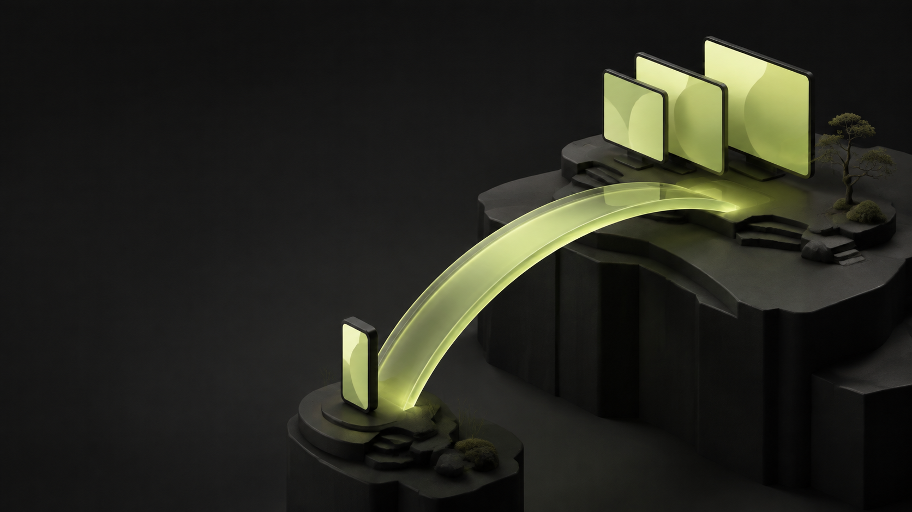
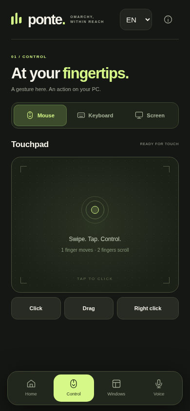

OPEN SOURCE ALPHA
Your Omarchy desktop,
within reach.
Touch controls and live monitor views on your Android phone. Connected through your own Tailscale network.
Set up Ponte ↗View presentationON YOUR PHONE
The controls
you came for.
Move the pointer, send text, switch windows and adjust the volume. Pair once and open the app from your home screen.
English by default. Switch to Portuguese whenever you want. Ponte remembers your preference.

LIVE MONITOR VIEWS
See what is happening
on your PC.
Select a monitor, pause the stream, zoom in or use fullscreen. The stream stops when you leave the live view.
MJPEG profiles up to 10 fps. No system audio. The local test with three monitors measured 7.1–7.3 fps per stream. Cellular performance has not been measured.
A FIRST RELEASE
Open source.
Built for your PC.
MIT licensed, with a local Node.js server and no production npm dependencies. Your Android build uses your own server address and certificate.
This is an experimental alpha. Initial setup still requires a personal APK build and a pairing key. Android recording verification is in progress.
Explore the source ↗